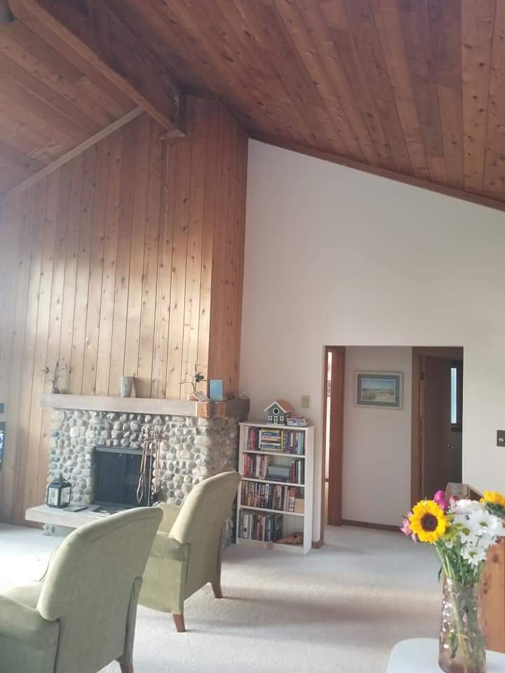

A Cottage in the Woods
by Christine Kovac
One of my favorite places to get away from it all and just relax is my sister's cottage in Cedar, MI.
From St. Louis, it's an approximately 11 hours drive. Even though it is a long time to be in a car,
the drive is definitely worth it! The cottage is built into a hillside which overlooks Little Traverse Lake
in the distance
and further out - spectacular views of Lake Michigan, the islands of North and South Manitou
and the North Manitou Shoal Lighthouse.
Inside the house is warm and inviting with a stone fireplace, vaulted ceilings and windows that go all the way up!


Sitting on the back deck enjoying the evening after spending the day on the beach, shopping in the nearby town of
Glen Arbor, visiting one of the local wineries or dining at one of the area restaurants is a great way to end the day.
The beaches are lined with fairly small strips of sand; perfect for getting some sun or reading a book or just looking
out at the waves lapping against the shore. In regards to the shorline; the sand quickly gives way to rocks and stones.
There are very unique and interesting stones to look/hunt for when at the beach. They called Petoskey Stones.
(They remind me of turtle or dinosaur eggs for some reason).